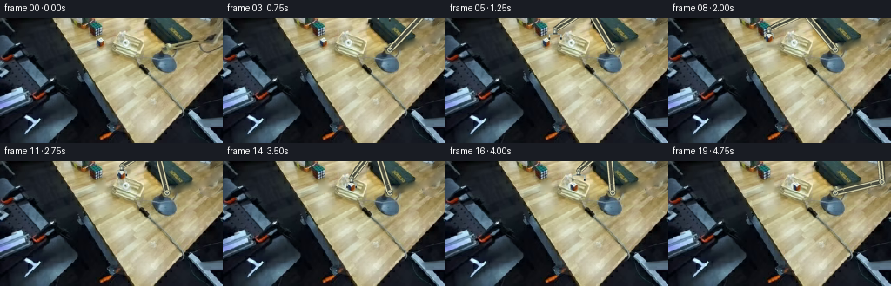
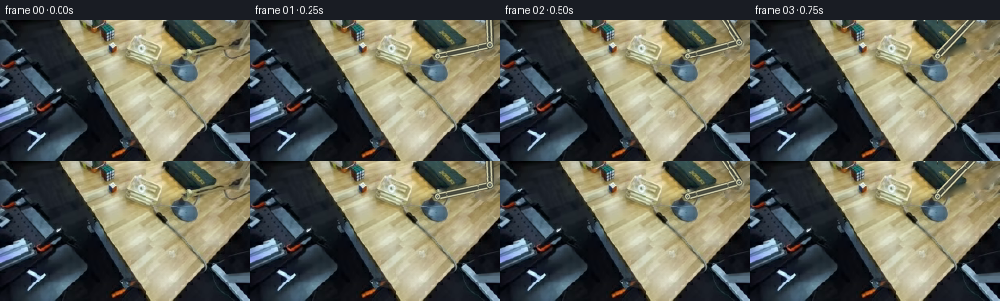
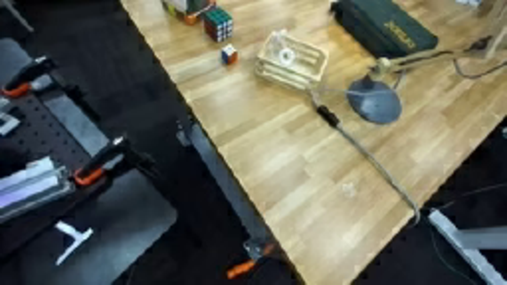
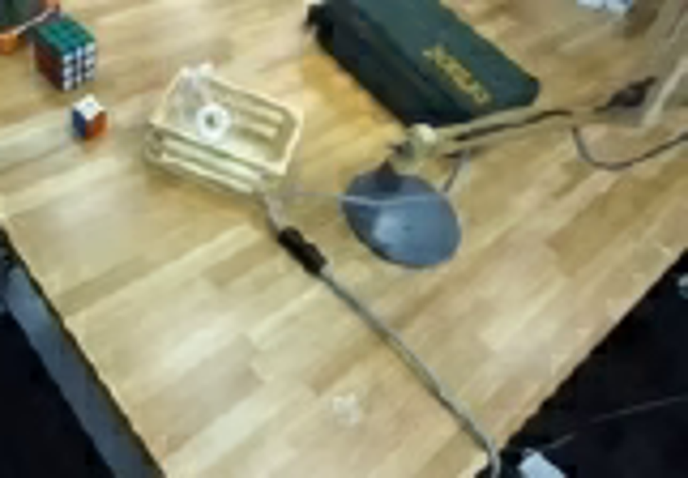
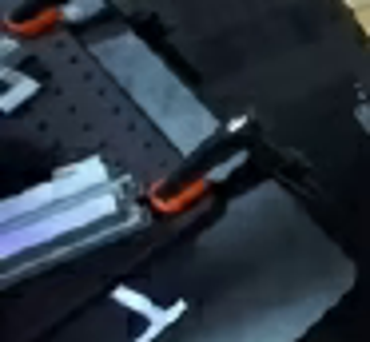
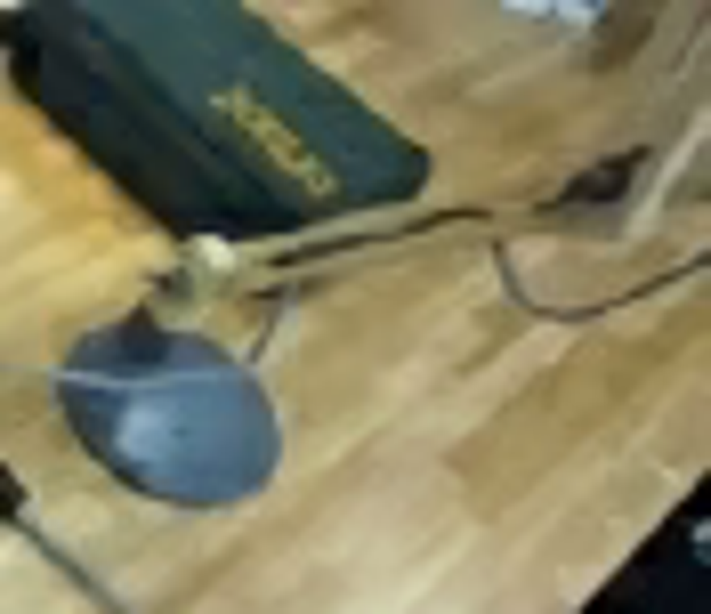
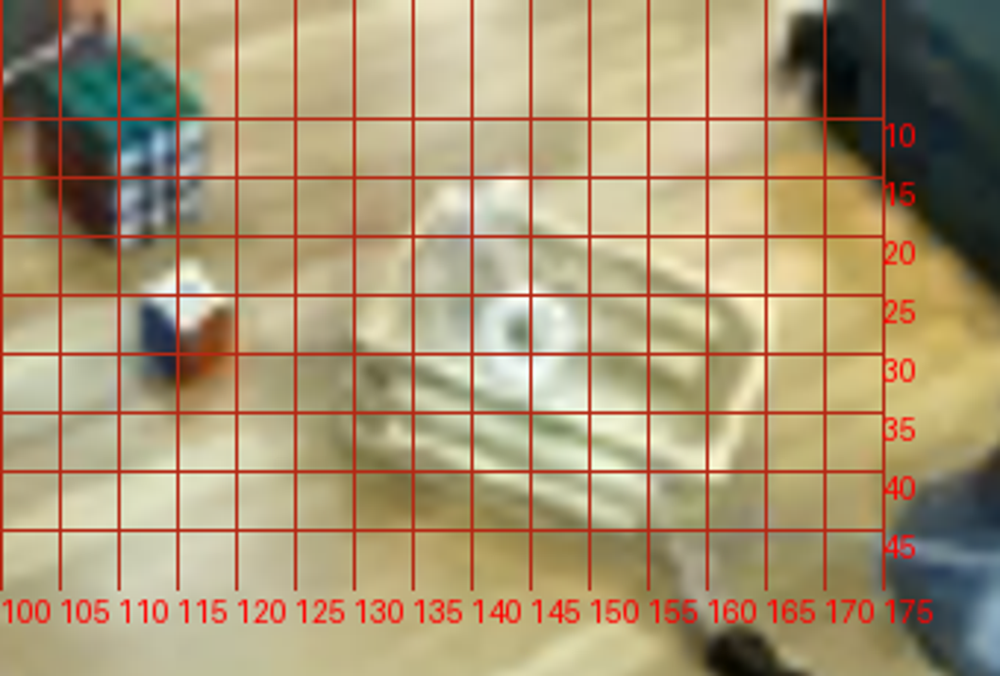
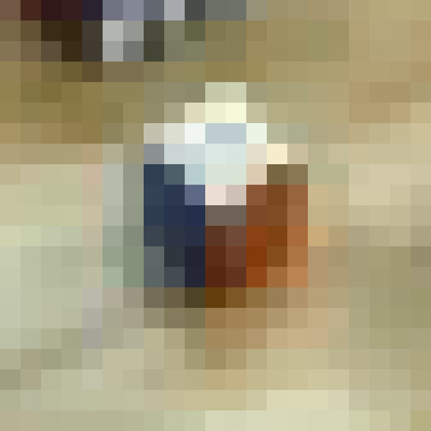
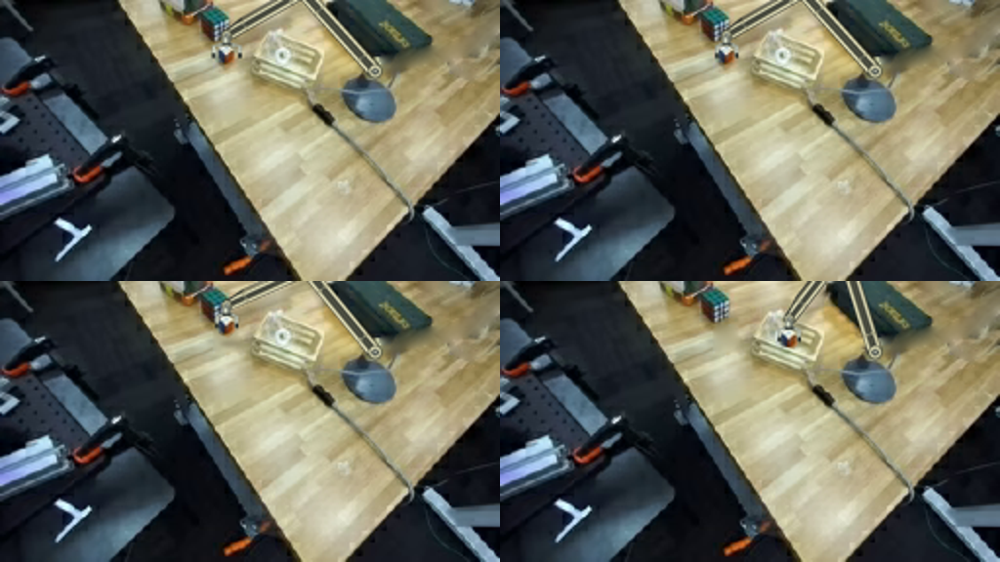

CODING AGENTS AS PIXEL WORLD MODELS
traex/GPT-6.1-Sol · common50_0010
点击播放 · 原生 RGB 像素
逐轮保存的候选
回放视频、检查图与代码变化。
每份候选均可单独播放。实际图片检查记录在下方工具轨迹中。
候选 01播放与检查图
点击播放 · 原生 RGB 像素


展开代码变化
--- 上一保存版本
+++ 本次保存版本
@@ -0,0 +1,180 @@
+"""Pixel-based fixed-camera pick and place, with a rigid planar articulated arm."""
+from pathlib import Path
+import math
+import numpy as np
+from PIL import Image, ImageDraw, ImageFilter
+import artifact_io
+
+ROOT=Path(__file__).resolve().parent
+S=4
+source=Image.open(ROOT/'first_frame.png').convert('RGB')
+orig=np.asarray(source).copy()
+W,H=source.size
+
+def mask_poly(points, blur=0):
+ im=Image.new('L',(W*S,H*S));d=ImageDraw.Draw(im)
+ d.polygon([(round(x*S),round(y*S)) for x,y in points],fill=255)
+ im=im.resize((W,H),Image.Resampling.LANCZOS)
+ if blur: im=im.filter(ImageFilter.GaussianBlur(blur))
+ return np.asarray(im)/255.
+
+def clean_mask():
+ im=Image.new('L',(W*S,H*S));d=ImageDraw.Draw(im)
+ def line(p,width): d.line([(int(x*S),int(y*S)) for x,y in p],fill=255,width=int(width*S))
+ # Original forearm, its parallel metal struts, and the suspended lead.
+ line([(195,33),(247,22)],9.0)
+ line([(247,22),(259,-8)],10)
+ line([(230,26),(231,35),(235,38),(242,38),(250,35),(258,27)],2.7)
+ im=im.resize((W,H),Image.Resampling.LANCZOS)
+ return np.asarray(im)>75
+
+def inpaint(img,mask):
+ # Harmonic surface continuation. All context comes from the supplied frame.
+ a=img.astype(float)
+ known=~mask
+ temp=a.copy();temp[mask]=np.mean(a[known],axis=0)
+ for _ in range(950):
+ p=np.pad(temp,((1,1),(1,1),(0,0)),mode='edge')
+ avg=(p[:-2,1:-1]+p[2:,1:-1]+p[1:-1,:-2]+p[1:-1,2:])/4
+ temp[mask]=avg[mask]
+ # Reintroduce fine wood detail instead of a featureless repair.
+ yy,xx=np.indices(mask.shape)
+ sample=img[(yy+29)%H, np.minimum(xx, W-1)].astype(float)
+ smooth=np.asarray(Image.fromarray(img).filter(ImageFilter.GaussianBlur(2.1))).astype(float)
+ residual=img.astype(float)-smooth
+ grain=residual[(yy+29)%H,xx]
+ temp[mask]+=grain[mask]*.33
+ return np.uint8(np.clip(temp,0,255))
+
+arm_mask=clean_mask()
+arm_clean=inpaint(orig,arm_mask)
+# Preserve the original white-topped cube as a rigid photographic object.
+cube_m=mask_poly([(115.4,22.3),(119.9,25.0),(120.5,30.8),(117.1,34.4),
+ (113,33.0),(111.2,30.7),(111.1,25.7)], .22)
+sprite=np.dstack([orig,np.uint8(cube_m*255)])
+sprite_im=Image.fromarray(sprite,'RGBA')
+# Remove the cube and its contact shadow only after it is lifted.
+remove=mask_poly([(112,21.8),(120.4,23.8),(122.6,30.4),(121,35.7),
+ (113.2,37.4),(108.9,34.2),(109,25.1)])>.08
+empty=inpaint(arm_clean,remove)
+
+front_mask=mask_poly([(128.7,29.5),(161.5,37.4),(160.4,43.1),(128.8,34.9)])
+
+# All moving geometry is transformed as fixed-length links; no image morphing.
+SH=np.array([192.,36.5]); L1=55.;L2=45.
+def elbow(wrist):
+ v=np.asarray(wrist)-SH;r=np.linalg.norm(v)
+ phi=math.atan2(v[1],v[0]);r=np.clip(r,abs(L1-L2)+.001,L1+L2-.001)
+ a=phi+math.acos(np.clip((L1*L1+r*r-L2*L2)/(2*L1*r),-1,1))
+ return SH+L1*np.array([math.cos(a),math.sin(a)])
+
+class Painter:
+ def __init__(self):
+ self.im=Image.new('RGBA',(W*S,H*S));self.d=ImageDraw.Draw(self.im)
+ def poly(self,ps,c):
+ self.d.polygon([(round(p[0]*S),round(p[1]*S)) for p in ps],fill=c)
+ def line(self,ps,c,w):
+ self.d.line([(round(p[0]*S),round(p[1]*S)) for p in ps],fill=c,width=max(1,round(w*S)))
+ def oval(self,xy,c):
+ self.d.ellipse(tuple(round(z*S) for z in xy),fill=c)
+ def finish(self):
+ return self.im.resize((W,H),Image.Resampling.LANCZOS)
+
+def link(p,a,b,width, lower=False):
+ a=np.asarray(a,float);b=np.asarray(b,float)
+ v=b-a;n=np.array([-v[1],v[0]])/np.linalg.norm(v)
+ u=v/np.linalg.norm(v)
+ def rect(w,aa,bb,c,off=0):
+ p.poly([aa+n*(off-w/2),bb+n*(off-w/2),bb+n*(off+w/2),aa+n*(off+w/2)],c)
+ rect(width+1.0,a,b,(58,58,44,255))
+ rect(width,a,b,(149,145,114,255))
+ rect(width-2.2,a+u*2,b-u*2,(75,77,64,255))
+ # Two permanently parallel aluminium rails, with consistent bevels.
+ for sign in [-1,1]:
+ rect(1.35,a+u*2,b-u*2,(184,182,147,255),sign*(width/2-.65))
+ rect(.38,a+u*2,b-u*2,(225,223,190,255),sign*(width/2-.65)-.38)
+ # Mechanically fixed cross-braces and hinge screws.
+ for t in [.18,.77]:
+ q=a+(b-a)*t
+ p.line([q-n*width*.47,q+n*width*.47],(162,160,129,255),1.35)
+ p.oval((q[0]-.55,q[1]-.55,q[0]+.55,q[1]+.55),(71,76,68,255))
+
+def joint(p,pos,r):
+ x,y=pos
+ p.oval((x-r,y-r,x+r,y+r),(71,74,59,255))
+ p.oval((x-r+.6,y-r+.3,x+r-.6,y+r-.6),(165,165,134,255))
+ p.oval((x-r+.85,y-r+.4,x+r-1.1,y+r-1.2),(196,195,162,255))
+ p.oval((x-r*.48,y-r*.45,x+r*.48,y+r*.45),(83,90,81,255))
+ p.oval((x-.6,y-.65,x+.6,y+.6),(212,215,196,255))
+ p.line([(x-.5,y),(x+.5,y)],(92,97,90,255),.35)
+
+def robot(wrist,gap):
+ p=Painter();e=elbow(wrist);w=np.asarray(wrist,float)
+ link(p,SH,e,6.3)
+ joint(p,SH,3.5)
+ link(p,e,w,5.3,True)
+ joint(p,e,3.7)
+ # A routed narrow cable follows the rigid lower link.
+ vec=w-e;n=np.array([-vec[1],vec[0]])/np.linalg.norm(vec)
+ p.line([e+n*3.2,e+vec*.3+n*4,e+vec*.76+n*4,w+n*2],(54,56,49,255),.8)
+ joint(p,w,2.65)
+ x,y=w
+ p.poly([(x-2.1,y+1),(x+2.1,y+1),(x+2.1,y+4.5),(x-2.1,y+4.5)],(111,117,106,255))
+ p.poly([(x-1.5,y+1.2),(x+.2,y+1.2),(x+.2,y+4.3),(x-1.5,y+4.3)],(195,201,182,255))
+ p.line([(x-3,y+4.5),(x+3,y+4.5)],(66,72,66,255),1.5)
+ # Parallel-jaw gripper; individual fingers translate only along its slide.
+ for side in [-1,1]:
+ q=x+side*gap/2
+ p.poly([(x+side*2.5,y+3.9),(q+side*.7,y+5.2),(q+side*.7,y+10.8),
+ (q-side*.7,y+10.8),(q-side*.7,y+5.8),(x+side*2.5,y+5.4)],(156,164,151,255))
+ p.line([(q-side*.35,y+6),(q-side*.35,y+10.1)],(218,224,203,255),.5)
+ p.poly([(q-.65,y+9.3),(q+.65,y+9.3),(q+.65,y+11.4),(q-.65,y+11.4)],(38,44,40,255))
+ return p.finish()
+
+wrists=[(256,-23),(244,-20),(220,-15),(185,-8),(150,3),(126,13),(116,18),
+ (116,18),(116,12.5),(119,6.5),(129,3.5),(140,5.5),(148,10.5),
+ (148,15.8),(148,19.5),(148,19.5),(153,11),(176,-1),(210,-14),(242,-21)]
+
+def shadow_layer(wrist,cubepos,attached):
+ p=Painter();e=elbow(wrist)
+ # Light from the upper left: muted shadows offset consistently down/right.
+ off=np.array([2.,7.])
+ p.line([SH+np.array([1,3]),e+off,np.array(wrist)+off],(29,30,18,45),6)
+ x,y=cubepos
+ if attached:
+ # Cube's shadow stays on the physical work surface while raised.
+ ground_y=28.5+(x-116)*.026
+ ht=max(0,ground_y-y)
+ p.oval((x-4+ht*.2,ground_y+2,x+6+ht*.2,ground_y+5),(39,30,12,int(68-ht*1.9)))
+ return p.finish().filter(ImageFilter.GaussianBlur(1.0))
+
+frames=[]
+for i,w in enumerate(wrists):
+ if i==0:
+ frames.append(orig.copy());continue
+ attached=8<=i<=14
+ if i<8: c=np.array([116.,28.5])
+ elif i<=14: c=np.asarray(w)+[0,10.5]
+ else: c=np.array([148.,30.])
+ base=Image.fromarray(empty if i>=8 else arm_clean).convert('RGBA')
+ if i>=8:
+ base=Image.alpha_composite(base,shadow_layer(w,c,attached))
+ # Translate the original masked object without changing its shape.
+ dx,dy=c-[116.,28.5]
+ moved=sprite_im.transform((W,H),Image.Transform.AFFINE,(1,0,-dx,0,1,-dy),Image.Resampling.BICUBIC)
+ base=Image.alpha_composite(base,moved)
+ if i>=13:
+ # The near crate wall occludes the deposited cube, not the robot.
+ amount=np.clip((c[1]-25.8)/4.2,0,1)
+ alpha=(front_mask*255*amount).astype(np.uint8)
+ wall=Image.fromarray(np.dstack([orig,alpha]),'RGBA')
+ base=Image.alpha_composite(base,wall)
+ else:
+ # Small shadow of the incoming arm on the table.
+ base=Image.alpha_composite(base,shadow_layer(w,c,False))
+ gap=13.5 if i<7 or i>=16 else (10.1 if i<=14 else 13.5)
+ base=Image.alpha_composite(base,robot(w,gap))
+ frames.append(np.asarray(base.convert('RGB'),dtype=np.uint8))
+frames=np.stack(frames)
+assert np.array_equal(frames[0],orig)
+artifact_io.save(frames,ROOT)
候选 02播放与检查图
点击播放 · 原生 RGB 像素

展开代码变化
--- 上一保存版本
+++ 本次保存版本
@@ -52,7 +52,7 @@
cube_m=mask_poly([(115.4,22.3),(119.9,25.0),(120.5,30.8),(117.1,34.4),
(113,33.0),(111.2,30.7),(111.1,25.7)], .22)
sprite=np.dstack([orig,np.uint8(cube_m*255)])
-sprite_im=Image.fromarray(sprite,'RGBA')
+sprite_im=Image.fromarray(sprite)
# Remove the cube and its contact shadow only after it is lifted.
remove=mask_poly([(112,21.8),(120.4,23.8),(122.6,30.4),(121,35.7),
(113.2,37.4),(108.9,34.2),(109,25.1)])>.08
@@ -129,7 +129,7 @@
(q-side*.7,y+10.8),(q-side*.7,y+5.8),(x+side*2.5,y+5.4)],(156,164,151,255))
p.line([(q-side*.35,y+6),(q-side*.35,y+10.1)],(218,224,203,255),.5)
p.poly([(q-.65,y+9.3),(q+.65,y+9.3),(q+.65,y+11.4),(q-.65,y+11.4)],(38,44,40,255))
- return p.finish()
+ return p.finish().filter(ImageFilter.GaussianBlur(.28))
wrists=[(256,-23),(244,-20),(220,-15),(185,-8),(150,3),(126,13),(116,18),
(116,18),(116,12.5),(119,6.5),(129,3.5),(140,5.5),(148,10.5),
@@ -167,7 +167,7 @@
# The near crate wall occludes the deposited cube, not the robot.
amount=np.clip((c[1]-25.8)/4.2,0,1)
alpha=(front_mask*255*amount).astype(np.uint8)
- wall=Image.fromarray(np.dstack([orig,alpha]),'RGBA')
+ wall=Image.fromarray(np.dstack([orig,alpha]))
base=Image.alpha_composite(base,wall)
else:
# Small shadow of the incoming arm on the table.
候选 03播放与检查图
可观测工具轨迹
实际执行的命令与返回图片。
命令 1exit 0
/bin/bash -lc "ls -la && cat prompt.txt && printf '\\n---RULES---\\n' && cat GENERATION_RULES.md"
命令 2exit 0
/bin/bash -lc "cat task_spec.json && cat artifact_io.py && python - <<'PY'
from PIL import Image
im=Image.open('first_frame.png'); print(im.size); im.resize((1024,576)).save('.tmp/enlarged.png')
PY"命令 3exit 0
/bin/bash -lc "python - <<'PY'
from PIL import Image
im=Image.open('first_frame.png'); im.crop((95,0,256,112)).resize((966,672)).save('.tmp/crop.png')
PY"命令 4exit 0
/bin/bash -lc "python - <<'PY'
from PIL import Image
im=Image.open('first_frame.png'); im.crop((0,40,93,126)).resize((744,688)).save('.tmp/left.png')
PY"命令 5exit 0
/bin/bash -lc "python - <<'PY'
from PIL import Image
im=Image.open('first_frame.png'); im.crop((168,0,256,76)).resize((880,760)).save('.tmp/right.png')
PY"命令 6exit 0
/bin/bash -lc "python - <<'PY'
from PIL import Image,ImageDraw
im=Image.open('first_frame.png').resize((1024,576)); d=ImageDraw.Draw(im)
for x in range(100,176,5):
d.line((x*4,0,x*4,200),fill=(180,40,20),width=1);d.text((x*4,202),str(x),fill='red')
for y in range(10,46,5):
d.line((400,y*4,700,y*4),fill=(180,40,20),width=1);d.text((700,y*4),str(y),fill='red')
im.crop((400,0,740,230)).resize((1020,690)).save('.tmp/grid.png')
PY"命令 7exit 0
/bin/bash -lc "python - <<'PY'
from PIL import Image
im=Image.open('first_frame.png'); im.crop((105,18,126,39)).resize((630,630),Image.Resampling.NEAREST).save('.tmp/cube.png')
PY"命令 8exit 0
/bin/bash -lc "cat > generate.py <<'PY'
\"\"\"Pixel-based fixed-camera pick and place, with a rigid planar articulated arm.\"\"\"
from pathlib import Path
import math
import numpy as np
from PIL import Image, ImageDraw, ImageFilter
import artifact_io
ROOT=Path(__file__).resolve().parent
S=4
source=Image.open(ROOT/'first_frame.png').convert('RGB')
orig=np.asarray(source).copy()
W,H=source.size
def mask_poly(points, blur=0):
im=Image.new('L',(W*S,H*S));d=ImageDraw.Draw(im)
d.polygon([(round(x*S),round(y*S)) for x,y in points],fill=255)
im=im.resize((W,H),Image.Resampling.LANCZOS)
if blur: im=im.filter(ImageFilter.GaussianBlur(blur))
return np.asarray(im)/255.
def clean_mask():
im=Image.new('L',(W*S,H*S));d=ImageDraw.Draw(im)
def line(p,width): d.line([(int(x*S),int(y*S)) for x,y in p],fill=255,width=int(width*S))
# Original forearm, its parallel metal struts, and the suspended lead.
line([(195,33),(247,22)],9.0)
line([(247,22),(259,-8)],10)
line([(230,26),(231,35),(235,38),(242,38),(250,35),(258,27)],2.7)
im=im.resize((W,H),Image.Resampling.LANCZOS)
return np.asarray(im)>75
def inpaint(img,mask):
# Harmonic surface continuation. All context comes from the supplied frame.
a=img.astype(float)
known=~mask
temp=a.copy();temp[mask]=np.mean(a[known],axis=0)
for _ in range(950):
p=np.pad(temp,((1,1),(1,1),(0,0)),mode='edge')
avg=(p[:-2,1:-1]+p[2:,1:-1]+p[1:-1,:-2]+p[1:-1,2:])/4
temp[mask]=avg[mask]
# Reintroduce fine wood detail instead of a featureless repair.
yy,xx=np.indices(mask.shape)
sample=img[(yy+29)%H, np.minimum(xx, W-1)].astype(float)
smooth=np.asarray(Image.fromarray(img).filter(ImageFilter.GaussianBlur(2.1))).astype(float)
residual=img.astype(float)-smooth
grain=residual[(yy+29)%H,xx]
temp[mask]+=grain[mask]*.33
return np.uint8(np.clip(temp,0,255))
arm_mask=clean_mask()
arm_clean=inpaint(orig,arm_mask)
# Preserve the original white-topped cube as a rigid photographic object.
cube_m=mask_poly([(115.4,22.3),(119.9,25.0),(120.5,30.8),(117.1,34.4),
(113,33.0),(111.2,30.7),(111.1,25.7)], .22)
sprite=np.dstack([orig,np.uint8(cube_m*255)])
sprite_im=Image.fromarray(sprite,'RGBA')
# Remove the cube and its contact shadow only after it is lifted.
remove=mask_poly([(112,21.8),(120.4,23.8),(122.6,30.4),(121,35.7),
(113.2,37.4),(108.9,34.2),(109,25.1)])>.08
empty=inpaint(arm_clean,remove)
front_mask=mask_poly([(128.7,29.5),(161.5,37.4),(160.4,43.1),(128.8,34.9)])
# All moving geometry is transformed as fixed-length links; no image morphing.
SH=np.array([192.,36.5]); L1=55.;L2=45.
def elbow(wrist):
v=np.asarray(wrist)-SH;r=np.linalg.norm(v)
phi=math.atan2(v[1],v[0]);r=np.clip(r,abs(L1-L2)+.001,L1+L2-.001)
a=phi+math.acos(np.clip((L1*L1+r*r-L2*L2)/(2*L1*r),-1,1))
return SH+L1*np.array([math.cos(a),math.sin(a)])
class Painter:
def __init__(self):
self.im=Image.new('RGBA',(W*S,H*S));self.d=ImageDraw.Draw(self.im)
def poly(self,ps,c):
self.d.polygon([(round(p[0]*S),round(p[1]*S)) for p in ps],fill=c)
def line(self,ps,c,w):
self.d.line([(round(p[0]*S),round(p[1]*S)) for p in ps],fill=c,width=max(1,round(w*S)))
def oval(self,xy,c):
self.d.ellipse(tuple(round(z*S) for z in xy),fill=c)
def finish(self):
return self.im.resize((W,H),Image.Resampling.LANCZOS)
def link(p,a,b,width, lower=False):
a=np.asarray(a,float);b=np.asarray(b,float)
v=b-a;n=np.array([-v[1],v[0]])/np.linalg.norm(v)
u=v/np.linalg.norm(v)
def rect(w,aa,bb,c,off=0):
p.poly([aa+n*(off-w/2),bb+n*(off-w/2),bb+n*(off+w/2),aa+n*(off+w/2)],c)
rect(width+1.0,a,b,(58,58,44,255))
rect(width,a,b,(149,145,114,255))
rect(width-2.2,a+u*2,b-u*2,(75,77,64,255))
# Two permanently parallel aluminium rails, with consistent bevels.
for sign in [-1,1]:
rect(1.35,a+u*2,b-u*2,(184,182,147,255),sign*(width/2-.65))
rect(.38,a+u*2,b-u*2,(225,223,190,255),sign*(width/2-.65)-.38)
# Mechanically fixed cross-braces and hinge screws.
for t in [.18,.77]:
q=a+(b-a)*t
p.line([q-n*width*.47,q+n*width*.47],(162,160,129,255),1.35)
p.oval((q[0]-.55,q[1]-.55,q[0]+.55,q[1]+.55),(71,76,68,255))
def joint(p,pos,r):
x,y=pos
p.oval((x-r,y-r,x+r,y+r),(71,74,59,255))
p.oval((x-r+.6,y-r+.3,x+r-.6,y+r-.6),(165,165,134,255))
p.oval((x-r+.85,y-r+.4,x+r-1.1,y+r-1.2),(196,195,162,255))
p.oval((x-r*.48,y-r*.45,x+r*.48,y+r*.45),(83,90,81,255))
p.oval((x-.6,y-.65,x+.6,y+.6),(212,215,196,255))
p.line([(x-.5,y),(x+.5,y)],(92,97,90,255),.35)
def robot(wrist,gap):
p=Painter();e=elbow(wrist);w=np.asarray(wrist,float)
link(p,SH,e,6.3)
joint(p,SH,3.5)
link(p,e,w,5.3,True)
joint(p,e,3.7)
# A routed narrow cable follows the rigid lower link.
vec=w-e;n=np.array([-vec[1],vec[0]])/np.linalg.norm(vec)
p.line([e+n*3.2,e+vec*.3+n*4,e+vec*.76+n*4,w+n*2],(54,56,49,255),.8)
joint(p,w,2.65)
x,y=w
p.poly([(x-2.1,y+1),(x+2.1,y+1),(x+2.1,y+4.5),(x-2.1,y+4.5)],(111,117,106,255))
p.poly([(x-1.5,y+1.2),(x+.2,y+1.2),(x+.2,y+4.3),(x-1.5,y+4.3)],(195,201,182,255))
p.line([(x-3,y+4.5),(x+3,y+4.5)],(66,72,66,255),1.5)
# Parallel-jaw gripper; individual fingers translate only along its slide.
for side in [-1,1]:
q=x+side*gap/2
p.poly([(x+side*2.5,y+3.9),(q+side*.7,y+5.2),(q+side*.7,y+10.8),
(q-side*.7,y+10.8),(q-side*.7,y+5.8),(x+side*2.5,y+5.4)],(156,164,151,255))
p.line([(q-side*.35,y+6),(q-side*.35,y+10.1)],(218,224,203,255),.5)
p.poly([(q-.65,y+9.3),(q+.65,y+9.3),(q+.65,y+11.4),(q-.65,y+11.4)],(38,44,40,255))
return p.finish()
wrists=[(256,-23),(244,-20),(220,-15),(185,-8),(150,3),(126,13),(116,18),
(116,18),(116,12.5),(119,6.5),(129,3.5),(140,5.5),(148,10.5),
(148,15.8),(148,19.5),(148,19.5),(153,11),(176,-1),(210,-14),(242,-21)]
def shadow_layer(wrist,cubepos,attached):
p=Painter();e=elbow(wrist)
# Light from the upper left: muted shadows offset consistently down/right.
off=np.array([2.,7.])
p.line([SH+np.array([1,3]),e+off,np.array(wrist)+off],(29,30,18,45),6)
x,y=cubepos
if attached:
# Cube's shadow stays on the physical work surface while raised.
ground_y=28.5+(x-116)*.026
ht=max(0,ground_y-y)
p.oval((x-4+ht*.2,ground_y+2,x+6+ht*.2,ground_y+5),(39,30,12,int(68-ht*1.9)))
return p.finish().filter(ImageFilter.GaussianBlur(1.0))
frames=[]
for i,w in enumerate(wrists):
if i==0:
frames.append(orig.copy());continue
attached=8<=i<=14
if i<8: c=np.array([116.,28.5])
elif i<=14: c=np.asarray(w)+[0,10.5]
else: c=np.array([148.,30.])
base=Image.fromarray(empty if i>=8 else arm_clean).convert('RGBA')
if i>=8:
base=Image.alpha_composite(base,shadow_layer(w,c,attached))
# Translate the original masked object without changing its shape.
dx,dy=c-[116.,28.5]
moved=sprite_im.transform((W,H),Image.Transform.AFFINE,(1,0,-dx,0,1,-dy),Image.Resampling.BICUBIC)
base=Image.alpha_composite(base,moved)
if i>=13:
# The near crate wall occludes the deposited cube, not the robot.
amount=np.clip((c[1]-25.8)/4.2,0,1)
alpha=(front_mask*255*amount).astype(np.uint8)
wall=Image.fromarray(np.dstack([orig,alpha]),'RGBA')
base=Image.alpha_composite(base,wall)
else:
# Small shadow of the incoming arm on the table.
base=Image.alpha_composite(base,shadow_layer(w,c,False))
gap=13.5 if i<7 or i>=16 else (10.1 if i<=14 else 13.5)
base=Image.alpha_composite(base,robot(w,gap))
frames.append(np.asarray(base.convert('RGB'),dtype=np.uint8))
frames=np.stack(frames)
assert np.array_equal(frames[0],orig)
artifact_io.save(frames,ROOT)
PY
python generate.py"命令 9exit 0
/bin/bash -lc "python - <<'PY'
from PIL import Image
im=Image.new('RGB',(1024,576))
for j,i in enumerate([6,7,8,14]):
f=Image.open(f'frames/{i:02d}.png').resize((512,288))
im.paste(f,((j%2)*512,(j//2)*288))
im.save('.tmp/keyframes.png')
PY"命令 10exit 0
/bin/bash -lc "python - <<'PY' import math,numpy as np SH=np.array([192,36.5]);a,b=55,45 for w in [[256,-23],[244,-20],[220,-15],[185,-8],[116,18],[148,19.5],[242,-21]]: v=np.array(w)-SH;r=np.linalg.norm(v);ang=math.atan2(v[1],v[0])+math.acos((a*a+r*r-b*b)/(2*a*r));e=SH+55*np.array([math.cos(ang),math.sin(ang)]);print(w,e) PY"
命令 11exit 0
/bin/bash -lc "cp inspection.png .tmp/inspection_v1.png && python - <<'PY'
p='generate.py'
s=open(p).read().replace(\"return p.finish()\\n\\nwrists=\", \"return p.finish().filter(ImageFilter.GaussianBlur(.28))\\n\\nwrists=\")
s=s.replace(\"sprite_im=Image.fromarray(sprite,'RGBA')\", \"sprite_im=Image.fromarray(sprite)\").replace(\"wall=Image.fromarray(np.dstack([orig,alpha]),'RGBA')\", \"wall=Image.fromarray(np.dstack([orig,alpha]))\")
open(p,'w').write(s)
PY
python generate.py
python - <<'PY'
import numpy as np
from PIL import Image
p=np.load('pixels.npz')['pixels']
a=np.array(Image.open('first_frame.png').convert('RGB'),dtype=np.uint32)
first=(a[:,:,0]<<16)|(a[:,:,1]<<8)|a[:,:,2]
assert p.shape == (144,256,20)
assert np.array_equal(p[:,:,0],first)
print('Validated 20 RGB frames at 256x144; first frame is pixel-identical.')
import shutil
print('ffmpeg:',shutil.which('ffmpeg'))
PY"视觉工具实际返回图片 1

视觉工具实际返回图片 2

视觉工具实际返回图片 3

视觉工具实际返回图片 4

视觉工具实际返回图片 5

视觉工具实际返回图片 6

视觉工具实际返回图片 7

视觉工具实际返回图片 8

保存候选 3 份；完成命令 11 次；可验证图片返回 8 张。原始 API 响应与完整日志保留在本地。